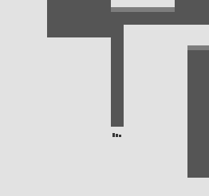
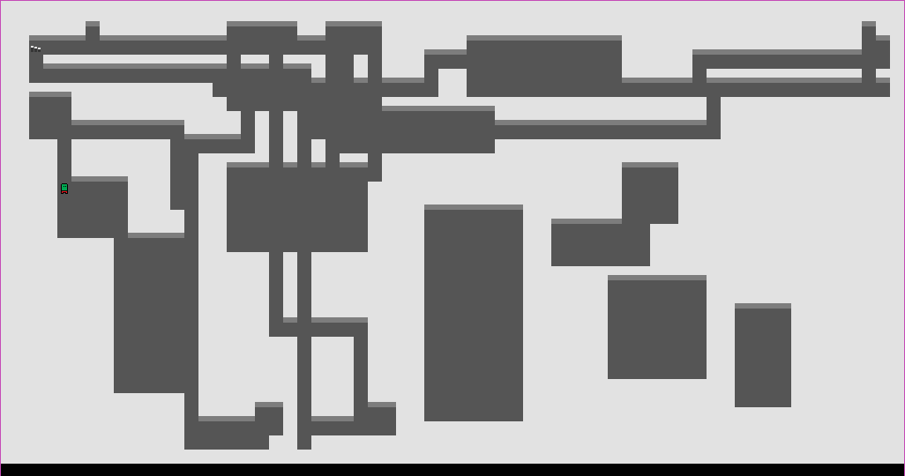

Procedural Level Generation in GML (Part 2: Paving Ways)
Today's lesson
Hey again! I promised myself I’d post at least once a week but life’s been hectic for some time :/
So last time we built cleanly defined rooms in random positions around the map. This tutorial will be all about creating a path connecting the created rooms. This is how it’s going to go – First select a FLOOR tile from the room, then let this tile “slither” through the room marking each tile it moves over as a PATH tile. Kinda like a slug leaving a trail.
Slug time
Let’s begin with declaring a few variables:
var path_x = 0;
var path_y = 0;
These will be the coordinates of the slug tile (yes we’re calling it the slug tile now). I always have the initial position of the slug tile at the FLOOR tile at the top left end of the room, but you can have it start from any point. A good method would be to randomly choose a point in the room till you get a FLOOR tile and then start from there.
// This sets the position variables to the first FLOOR tile encountered
for(var xx = 0; xx < width; xx++) {
for(var yy = 0; yy < height; yy++) {
if(grid[# xx, yy] == FLOOR) {
path_x = xx;
path_y = yy;
break_loop = 1;
break;
}
}
if(break_loop) break;
}
var path_direction = irandom(3);
var direction_change_odds = 3;
var path_steps = 500;
grid[# path_x, path_y] = PATH;
These are the behaviour defining variables of the path. The path_direction and direction_change_odds variables are used to change the direction of the slug. Increasing the value in the irandom function gives straighter paths, while decreasing it gives a path with lots of twists and turns; you’ll see how in the following code block. Changing the value of path_steps changes the total length of the path. Then initialise the slug with a PATH.
Now let’s get down to business.
repeat (path_steps) {
if(grid[# path_x, path_y] != PATH)
grid[# path_x, path_y] = PATH;
if(irandom(direction_change_odds) == direction_change_odds)
path_direction = choose(path_direction, path_direction-1, path_direction+1);
var x_direction = lengthdir_x(1, path_direction * 90);
var y_direction = lengthdir_y(1, path_direction * 90);
path_x += x_direction;
path_y += y_direction;
//change direction if path tries to leave room
if(path_x < 2 || path_x > width-2) {
grid[# path_x, path_y] = WALL;
path_y += y_direction;
path_x += -x_direction * 2;
}
if(path_y < 2 || path_y > height-2) {
grid[# path_x, path_y] = WALL;
path_x += x_direction;
path_y += -y_direction * 2;
}
if(path_direction < 0) path_direction += 4;
}
Let’s begin with the repeat loop: this gives the number of times the slug moves. The tile on which the slug is resting will then be assigned as a PATH tile. The next bit of code tells the slug the direction it should move in next. ere the values returned by the irandom function can be 0, 1, 2 or 3. Whenever it returns 3 the new direction is selected. So like I mentioned earlier when the number in irandom changes, the chances of changing the direction also changes. Probability is just so cool.
The values of x_direction and y_direction are changed next using the lengthdir functions. The second argument of the function takes the angle in which the slug moves, which is either 0 (right), 90 (up), 180 (left) or 270 (down), like the unit circle from trigonometry. So path_direction is multiplied by 90 so that the slug moves in one of these directions. Then as path_x and path_y change, the slug moves.
If the slug tries leaving the room, first assign the current tile as a WALL so that it appears untouched. Then the direction of the slug is changed. The last line is just in case the value of path_direction goes below 0. Like in a unit circle, adding 360 (or in this case 4) does not change the direction.
I personally don’t prefer it when the path end abruptly, like over here-
The three black lines are a stairs object meant to take the player to the next level and it’s meant to spawn at the point the path ends. But here since the path ends into a wall, the stairs become inaccessible. To avoid this, I added a loop so that even if the number of path tiles is exceeded, the path always ends inside a room. The body of this loop is just the same one given above.
while(grid[# path_x, path_y] == WALL) {
if(grid[# path_x, path_y] != PATH)
...
...
if(path_direction < 0) path_direction += 4;
}

And that’s basically it! Now there’s a lot of scope for improvement – in 8 / 10 cases there’s going to be at least one room not connected to the others through the path, but these won’t be noticeable if you use a small camera and especially not if fog of war mechanics are used or the room is just dark. There’s also a bunch of “dead end” tiles on the edges of the room, which can be removed if they don’t fit the general mood of your game. I however am going to keep them, maybe turn them into hidden alcoves or something of the sort. Feel free to tweak whatever and change any of the code to your liking.